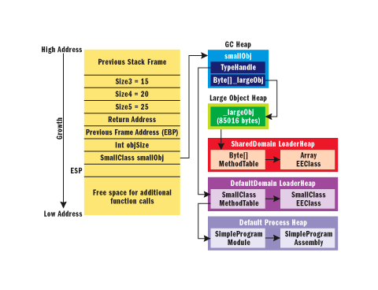
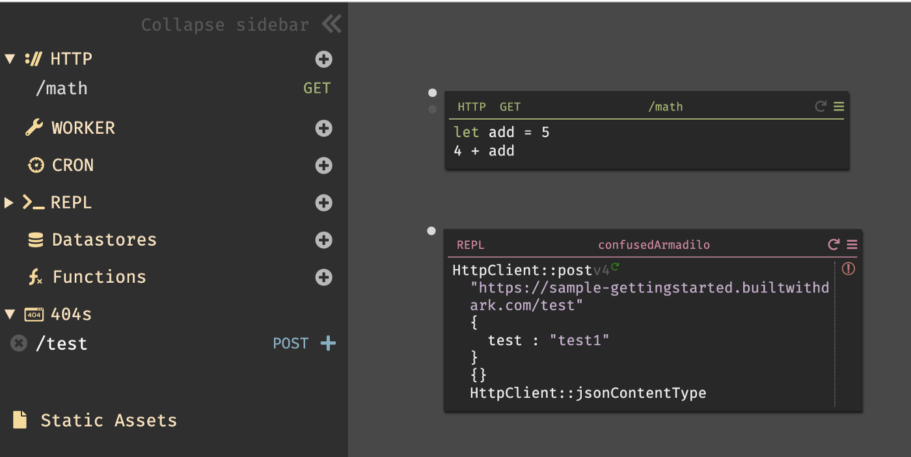
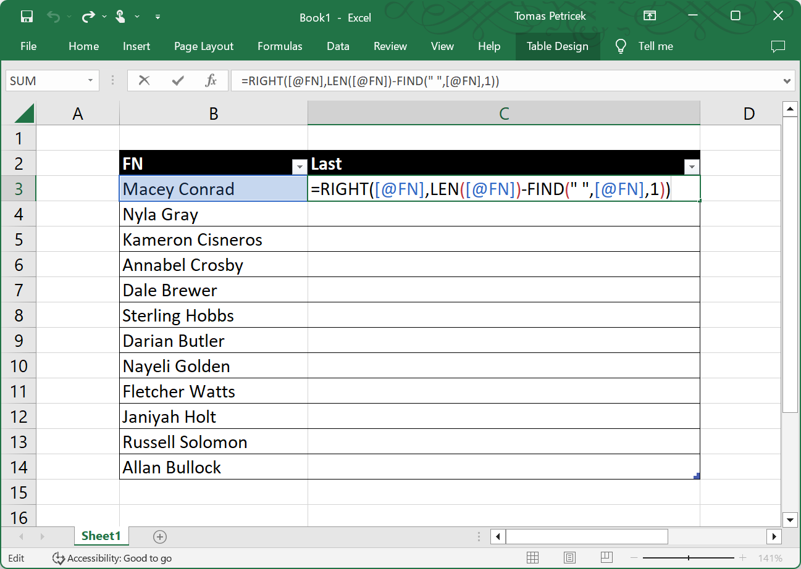

NPRG075
Heuristic evaluation of
programming systems
Tomáš Petříček, 309 (3rd floor)
petricek@d3s.mff.cuni.cz
https://tomasp.net | @tomaspetricek
Lectures: Monday 12:20, S7
https://d3s.mff.cuni.cz/teaching/nprg075

Programming systems
What really matters?
Programming systems
What can we study?
- Formal semantics and type safety
- Learnability for novice programmers
- Socio-technical context of the system
- Principles behind the system design

What makes a language popular
None of the things
we talked about?
Popular \(\neq\) Good
The index has its flaws
Still, a reason to think!

Most loved or
most dreaded?
Enthusiastic community?
Good tooling?
Clean idea?
Practicality?
Need to talk about
less exact things!
Analysis of language perceptions

Survey analysis
- Survey of language characteristics
- Feature and language correlations
- tinyurl.com/nprg075-socio
Adoption of languages
- Libraries matter
- Legacy and history matter
- Flexibility more important than correctness
Programming systems
Important but hard to study
- Expressivity of the programming notation
- Unifying conceptual model ("everything is ...")
- Style of interaction with the system
- Extensibility and flexibility of the language

Heuristic analysis
High-level rules, characteristics or principles
Developed by experts, based on reviews and experience
Useful for evaluation, classifying, analysis,
new design
Programming systems
Heuristic frameworks
- Levels of liveness of programming systems
- Memory models of programming languages
- Cognitive dimensions of notation
- Technical dimensions of programming systems
Programming systems
Liveness and memory models

From batch processing ...
Coding at the computer prohibitively expensive
Write program, punch on cards, submit & wait
A few day feedback cycle!
... to live coded music performance

Visual programming
Planning and coding of problems for an electronic computing instrument (Goldstine, von
Neumann, 1948)

Liveness levels
(Tanimoto, 1990)
Level 1
Flowchart that exists independently of a program
Level 4
Continuous processing with immediate dynamic change of behaviour
Liveness levels
Programming system heuristic
- Single property of specific systems
- Can be used for comparing systems
- Imagines step beyond the state-of-the-art
- Can be used for designing new systems
Memory models of systems
Primary representation
- How things are represented
- Defines what can be done
- Defines how to think!
Six major conceptualizations
- COBOL, LISP and FORTRAN
- SQL, UNIX and tape storage
- In reality, it's always a mix!
Language memory models
-
COBOL - Memory is a nested record (tax form)
No need for pointers, but no sharing allowed -
LISP - Memory is an object graph (symbol list)
Flexible, but serialization & efficiency tricky -
FORTRAN - Memory is a bunch of arrays (vector)
Close to the metal, but no semantic checking
Storage memory models
-
PIPES - Magnetic tape model (I/O streams)
Specific, but great for some problems (MapReduce) -
MULTICS - Tree with blob leaves (file system)
Legible, allows separation; rarely used in full -
SQL - Memory is a set of relations (tables)
Expressive query language, c.f. Prolog and similar
Memory models
Programming system heuristic
- Single property of any programming system
- Categorical rather than ordinal
- Sheds light on what exists
- Open to questioning, e.g., is that all there is?
Notations
Cognitive dimensions
Notations and humans

Notations in computing
- Programming languages
- Markup and config files
- Rule and macro editors
User experience questions
- Does the notation structure support activities of the user?
- Is one notation the best?
Cognitive dimensions
Programming system heuristic
- Comprehensible broad-brush evaluation
- Understandable for non-specialists
- Distinguish different user needs
- Prompt designers to see more choices

Dimensions × Activities
Variety of dimensions
For a given activity
Activities
Generic activities
involving notations
Each has different notational needs
Activities with different needs
- Incrementation - adding formulas to spreadsheet
- Transcription - copying data from paper
- Modification - changing formula in a spreadsheet
- Exploratory design - designing software structure
- Searching - finding uses of a function
- Exploratory understanding - understanding code
Dimensions × Activities
Variety of dimensions
For a given activity
Dimensions
Characteristic
of the notation
Human-computer interaction analysis perspective
Example cognitive dimensions (1/2)
- Viscosity - Resistance to change
- Visibility - Ability to view components easily
- Premature commitment - Need to decide too early
- Hidden dependencies - Important links not visible
- Role-expressiveness - Purpose of an entity is clear
Example cognitive dimensions (2/2)
- Error-proneness - Notation invites mistakes
- Abstraction - Types and availability of mechanisms
- Consistency - Similar syntax has similar semantics
- Diffuseness - Verbosity of language
- Hard mental operations - High cognitive demand

Case study
Two ways of specifying email filters
Visual rule editor vs.
scripting language
Two ways of specifying email filters
Visual editor

Scripting language

Incrementation
Adding new condition
Viscosity
Not all additions possible
Abstraction
Condition format is fixed
Hard mental operations
Everything is simple & clear
Incrementation
Adding new condition
Viscosity
Edit text for any change
Abstraction
Possible via a script
Hard mental operations Understanding code is hard
Two ways of specifying filters

Cognitive dimensions
- Used for evaluation
- Consider activities & dimensions
- Clear lists to use
What is a better notation?
- Wrong question: different trade-offs!
- UI is viscose, less abstract, but simpler
- Script has abstractions, less viscose, but harder

Block based
visual languages
Contrast with text for addition (writing code)
Premature commit
Diffuseness / verbosity
Abstraction
Error-proneness
Reading

CDs in the real-world!
-
A Usability Analysis of Blocks-based Programming Editors using
Cognitive Dimensions - tinyurl.com/nprg075-blocks (SciHub)
Why read this paper
- Example of rigorous analysis
- Based on a user study
- Equally possible with expert assessment
Programming systems
Technical dimensions
From languages to systems

Programming system is
Integrated and complete set of
tools sufficient for creating,
modifying, and executing programs
These will include
Notations for structuring programs
and data, facilities for running and
debugging programs, and interfaces
for performing all of these tasks.
Interesting programming systems
Research and industry
- Low-code and no-code startups
- Live & interactive systems
- Interesting code editors
How do we talk about these?
- Difficult to say what is new
- Hard to look beyond the interface
- Programming systems deserve a theory too!

Technical dimensions
Based on analysis of past and modern systems
Capture their key characteristics
Describe a range of possible values
Descriptive, not prescriptive
Technical dimensions catalogue
Interaction
Feedback Loops
Modes of interaction
Abstraction Construction
Notation
Notational Structure
Surface/Internal
Primary/Secondary
Expression Geography
Uniformity
Error Handling
Error Detection
Error Response
Conceptual Structure
Integrity/Openness
Composability
Convenience
Commonality
Customizability
Staging
Externalizability
Additive Authoring
Self-Sustainability
(Others)
Degrees of Automation
Learnability & Sociability
Notational uniformity

Post-modernist
- Variety of different notations
- More to learn, but better problem fit
- Perl language, Web platform
Modernist
- Small set of uniform primitives
- Not everything fits the notation
- Lisp and (partly) Smalltalk
Self-sustainability

Separate language level
- Implementation vs. user level
- Limited changeability from within
- Java and other languages
Integrated systems design
- Implemented & modifiable in itself
- Often changeable at runtime
- Smalltalk, Lisp Machines
Abstraction construction
From Concrete
- Generalize from examples
- Expanding range in Excel
- Pygmalion system
From Abstract
- Define function first
- Most programming languages
- Coding done without values
Technical dimensions
Programming system heuristic
- Making sense of different systems
- Broad strokes and high-level
- Useful for making comparisons
- Useful for finding gaps in design space
Conclusions
Heuristic analysis

Heuristic analysis of languages
Both idea generation
and evaluation
Depends on the
kind of heuristic
Categorical allows questioning
Ordinal allows for
degree comparison
Announcement
Next lecture will be online!
- 12:20, January 2, 2023
- matfyz.zoom.us/j/91945625974
- Meeting ID: 919 4562 5974
Conclusions
Heuristic evaluation of programming systems
- Memory (categorical) and liveness (ordinal)
- Cognitive and technical dimension frameworks
- Broad-brush map of the design space
- Useful for evaluation and novel design ideas
Tomáš Petříček, 309 (3rd floor)
petricek@d3s.mff.cuni.cz
https://tomasp.net | @tomaspetricek
https://d3s.mff.cuni.cz/teaching/nprg075
References (1/2)
Live visual programming
- Tanimoto, S. L. (1990). VIVA: A visual language for image processing, Journal on Visual Languages
- Tanimoto, S. L. (2013). A Perspective on the Evolution of Live Programming, LIVE
Language adoption & Heuristics
- Meyerovich, L. A., Rabkin, A. S. (2013). Empirical Analysis of Programming Language Adoption, OOPSLA
- Meyerovich, L. A., Rabkin, A. S. (2012). Socio-PLT: Sociological Principles for Programming Language Adoption, Onward!
- Nielsen, J. (1994). 10 Usability Heuristics for User Interface Design. Norman-Nielsen Group
References (2/2)
Cognitive, technical & memory models
- Sitaker, K. J. (2016). The memory models that underlie programming languages, Online
- Jakubovic, J. et al. (2023). Technical Dimensions of Programming Systems, Programming
- Holwerda, R., Hermans, F. (2018). A usability analysis of blocks-based programming editors using cognitive dimensions, VL/HCC
- Blackwell, A., Green, T. (2002). Notational Systems – the Cognitive Dimensions of Notations framework. (Chapter)
A bit of history
- Goldstine, H., von Neumann, J. (1947). Planning and coding of problems for an electronic computing, Princeton